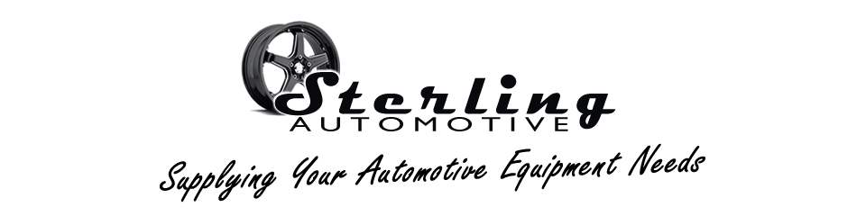
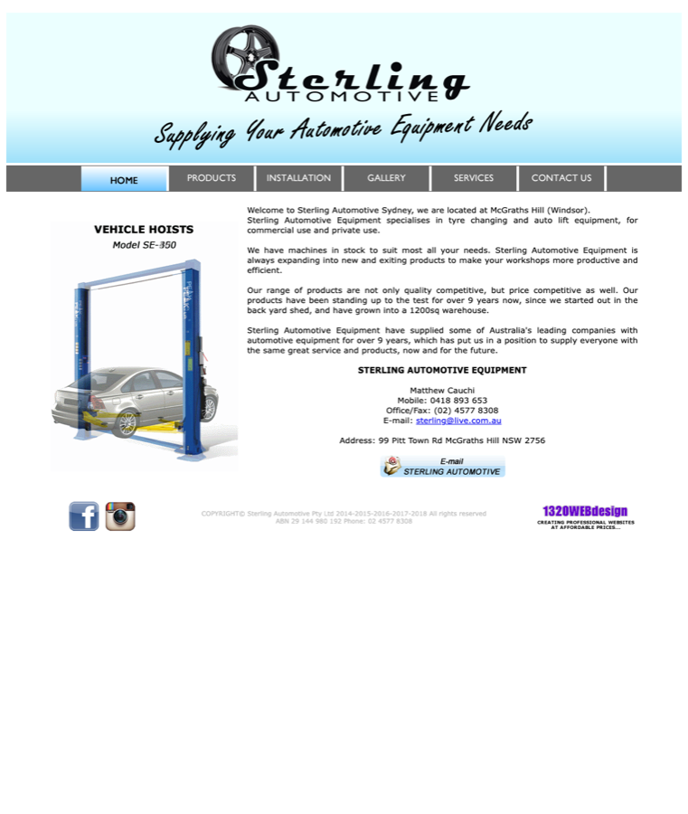

What's out there now
Sterling + Titan public branding, checked 17 Nov 2026. Private working page, not linked from the demo.
1. Sterling: yes, a logo exists

Their only logo. Same one on the website and their Facebook page. Only exists as a low-res picture, no clean file.
- Curly black script "Sterling" + thin "AUTOMOTIVE"
- Stock photo of an alloy wheel behind it
- Handwriting tagline: "Supplying Your Automotive Equipment Needs"
- No brand colour, just black
2. Sterling's website today

sterlingautoequip.com.au, built around 2014. Pale blue banner, grey menu, Verdana text.
Colours it uses:
Black logo
Sky blue banner
Grey menu
Silver
Gold headings
Also: Facebook page "sterlingautoequip", 667 followers, same logo. An Instagram is linked but wasn't checked.
3. Titan: nothing found
- No logo, no website, no Facebook, no Google listing
- Only the company record (ABN) and the Outlook email
- Ask Matt: van signage, shirts, invoice header? Those don't show online
4. Steer clear
- Gosford Hoist (Central Coast competitor, not Matt's): logo is a black "H" shaped like a hoist with a red car on it. Don't go near that idea.
- Sterling's site footer says "Sterling Automotive Pty Ltd". The real company is Sterling Engineering Pty Ltd.
The decision
Keep Sterling's script logo in the new look? Yes or no.
My lean: fresh shared look for both businesses, with the Sterling script as a small nod only. Titan has nothing to match anyway.